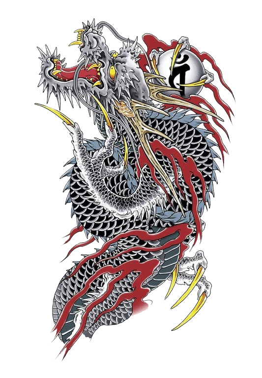

Kazuma Kiryu
Kazuma Kiryu, the stoic dreamer of the dark yakuza world, living by a strict code of honor and a very strong sense of justice. He does not judge others and is generally accepting of anyone who is friendly towards him.